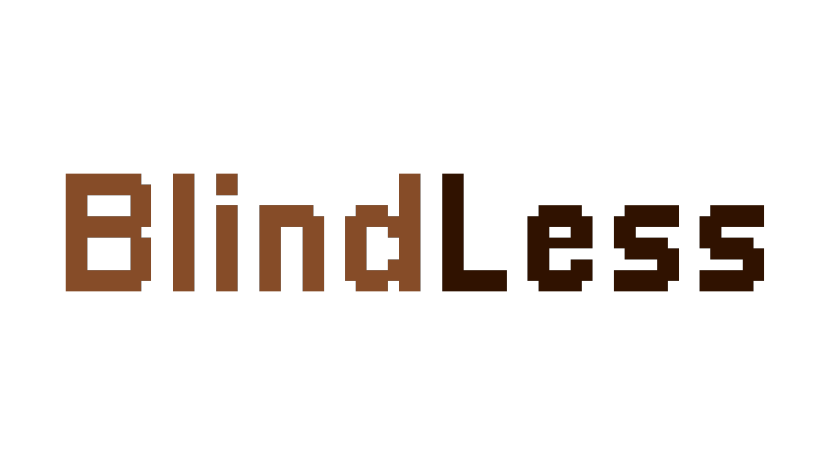

GIT
LUCES DE BOHEMIA RAMÓN MARÍA DEL VALLE-INCLÁN
BlindLess es un juego basado en el libro “Luces de bohemia” del autor de la generación del 98, Ramón María del Valle-Inclán. En este aparecerán los lugares más relevantes mencionados en la obra, al igual que sus personajes.
El juego trata de ir avanzando en la historia pudiendo elegir distintos caminos con diferentes finales con las decisiones que tome el jugador.